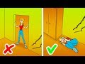

Understanding Earthquakes: Introduction, Symptoms, and Preventive Measures

Introduction to Earthquakes
What are Earthquakes? Earthquakes are sudden, rapid shaking of the Earth caused by the breaking and shifting of subterranean rock as it releases strain that has accumulated over time. These natural events occur without warning and can vary in magnitude, leading to varying levels of damage.
Symptoms of an Approaching Earthquake
Though earthquakes cannot be predicted with precision, there are often some indicators of seismic activity:
- Ground Vibration: A subtle or strong vibration of the ground that increases in intensity.
- Unusual Animal Behavior: Some animals may display unusual behaviors before an earthquake, such as restlessness or attempts to flee the area.
- Sounds: A rumbling noise or a sudden loud noise can sometimes be heard just before or during an earthquake.
Preventive Measures
Taking proactive steps can help minimize the impact of an earthquake:
- Secure Furniture
- Identify Safe Spots
- Prepare an Emergency Kit
- Structural Reinforcement
- Family Emergency Plan
